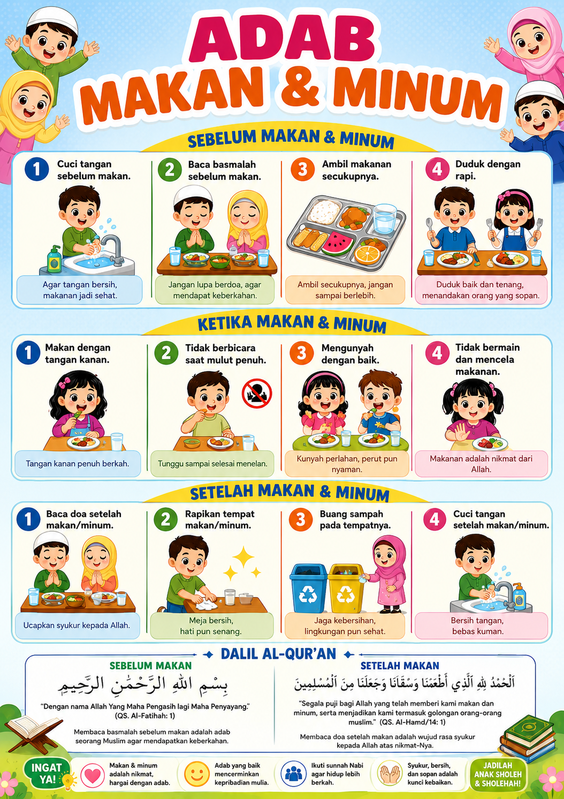

Pembahasan akademik mengenai pendidikan agama berdasarkan Al-Qur'an dan Hadist.
Pelajari Sekarang UTS Page UAS PageSyahadatain adalah dua kalimat syahadat yang menjadi dasar keimanan dalam Islam. Syahadat merupakan fondasi utama yang menjadi pintu masuk seseorang ke dalam agama Islam.
Beberapa praktik yang sering ditemukan di internet antara lain:
Dalam Al-Qur'an Surah At-Taubah ayat 65–66 dijelaskan bahwa memperolok Allah dan Rasul dapat menyebabkan seseorang keluar dari keimanan. Hadis Nabi juga menjelaskan bahwa keluar dari agama (murtad) merupakan perkara yang sangat serius dalam Islam.
Syahadatain merupakan fondasi utama dalam Islam. Segala bentuk keyakinan, ucapan, maupun perbuatan yang bertentangan dengan makna syahadat dapat membatalkannya apabila dilakukan dengan sadar dan tanpa paksaan. Oleh karena itu, diperlukan kehati-hatian serta pemahaman yang benar dalam menjaga keimanan.
Al-Qur’an bukan hanya kitab suci yang berisi perintah dan larangan, tetapi juga memuat kisah-kisah luar biasa yang sarat makna dan penuh pelajaran hidup.
Keteguhan iman dalam menghadapi ujian berat dan pengorbanan.
Keimanan diuji dengan keikhlasanKesabaran berdakwah meskipun menghadapi penolakan bertahun-tahun.
Kesabaran adalah kunciPerjuangan melawan kezaliman dan menegakkan kebenaran.
Kebenaran harus diperjuangkanPemuda yang mempertahankan iman di tengah tekanan.
Iman harus dijaga dalam kondisi apapunKisah tentang kesombongan akibat kekayaan yang berujung kehancuran.
Kesombongan membawa kebinasaan
Poster edukasi mengenai adab makan dan minum berdasarkan ajaran Islam
beserta dalil Al-Qur'an.